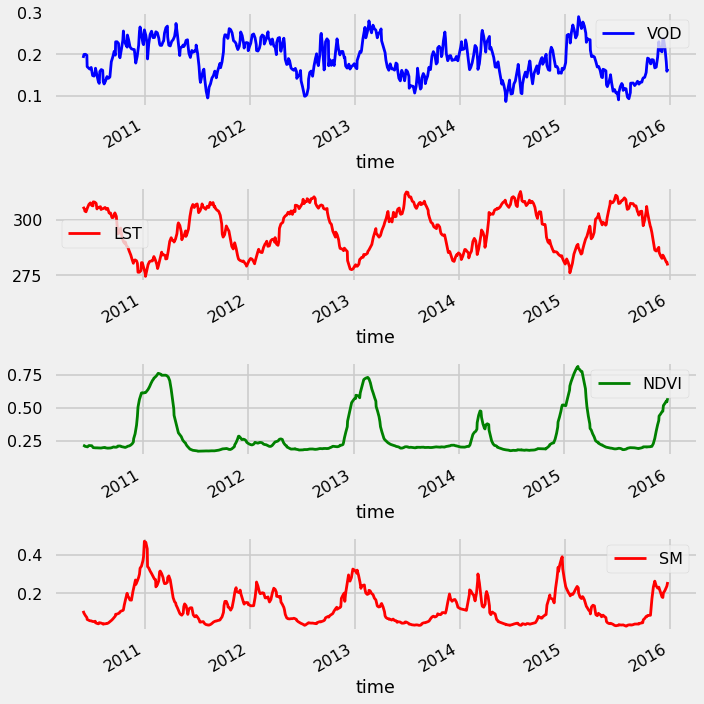

Standard Preprocessing¶
Steps:
Load CONUS dataset (5D, 14D temporal resolution)
Subset Area of Interest (AOI)
Interpolate the NANs
Smooth the Signal
Calculate the anomalies (remove the climatology)
Package Preamble¶
import sys
from pyprojroot import here
# spyder up to find the root
root = here(project_files=[".here"])
# append to path
sys.path.append(str(root))
sys.path.append("/home/emmanuel/code/isp_data")
# standard libraries
import geopandas as gpd
import xarray as xr
xr.set_options(display_style="html")
# Helper Functions
from isp_data.drought.load import DroughtData
from isp_data.polygons import get_local_polygons
from isp_data.viz import plot_mean_time
# Plot functions
import matplotlib.pyplot as plt
%load_ext autoreload
%autoreload 2
1 - Load Drought Data¶
region = 'conus'
sampling = '5D'
drought_data = DroughtData()
drought_cube = drought_data.load_data(region, sampling)
drought_cube
<xarray.Dataset>
Dimensions: (lat: 461, lon: 865, time: 526)
Coordinates:
* time (time) datetime64[ns] 2010-05-30 2010-06-01 ... 2015-12-30
* lat (lat) float64 25.88 25.93 25.98 26.03 ... 48.74 48.79 48.84 48.89
* lon (lon) float64 -124.4 -124.3 -124.2 -124.2 ... -80.64 -80.59 -80.54
Data variables:
SMADI (lat, lon, time) float64 ...
LST (lat, lon, time) float64 ...
NDVI (lat, lon, time) float64 ...
VOD (lat, lon, time) float64 ...
SM (lat, lon, time) float64 ...xarray.Dataset
- lat: 461
- lon: 865
- time: 526
- time(time)datetime64[ns]2010-05-30 ... 2015-12-30
array(['2010-05-30T00:00:00.000000000', '2010-06-01T00:00:00.000000000', '2010-06-04T00:00:00.000000000', ..., '2015-12-22T00:00:00.000000000', '2015-12-25T00:00:00.000000000', '2015-12-30T00:00:00.000000000'], dtype='datetime64[ns]') - lat(lat)float6425.88 25.93 25.98 ... 48.84 48.89
array([25.882189, 25.932203, 25.982217, ..., 48.788552, 48.838566, 48.88858 ])
- lon(lon)float64-124.4 -124.3 ... -80.59 -80.54
array([-124.392277, -124.292263, -124.242256, ..., -80.636199, -80.586193, -80.536186])
- SMADI(lat, lon, time)float64...
[209750390 values with dtype=float64]
- LST(lat, lon, time)float64...
[209750390 values with dtype=float64]
- NDVI(lat, lon, time)float64...
[209750390 values with dtype=float64]
- VOD(lat, lon, time)float64...
[209750390 values with dtype=float64]
- SM(lat, lon, time)float64...
[209750390 values with dtype=float64]
1.1 - Demo Plot¶
# plot
plot_mean_time(drought_cube.VOD, cmap="viridis", title="Vegetation Optical Depth", );
2.0 - Subset Area of Interest¶
In this case, we’re going to take a single pixel as our demonstration. Ideally we would want to take a larger area but for the purposes of this demo, we just need a single time series.
from isp_data.esdc.subset import select_pixel
pixel = (-121, 37)
demo_pixel = select_pixel(drought_cube, pixel, method='nearest')
demo_pixel
<xarray.Dataset>
Dimensions: (time: 526)
Coordinates:
* time (time) datetime64[ns] 2010-05-30 2010-06-01 ... 2015-12-30
lat float64 36.99
lon float64 -121.0
Data variables:
SMADI (time) float64 nan 3.838 nan nan nan ... nan nan 0.07785 nan nan
LST (time) float64 nan nan 308.2 304.8 305.3 ... 280.4 nan 281.8 275.8
NDVI (time) float64 nan nan 0.2247 0.2177 ... 0.5248 nan 0.5699 0.6128
VOD (time) float64 0.193 nan 0.1894 0.2182 ... 0.1777 nan 0.1379 0.1947
SM (time) float64 0.1178 nan 0.09778 0.08174 ... nan 0.2657 0.2781xarray.Dataset
- time: 526
- time(time)datetime64[ns]2010-05-30 ... 2015-12-30
array(['2010-05-30T00:00:00.000000000', '2010-06-01T00:00:00.000000000', '2010-06-04T00:00:00.000000000', ..., '2015-12-22T00:00:00.000000000', '2015-12-25T00:00:00.000000000', '2015-12-30T00:00:00.000000000'], dtype='datetime64[ns]') - lat()float6436.99
array(36.98527369)
- lon()float64-121.0
array(-120.99180442)
- SMADI(time)float64...
array([ nan, 3.837854, nan, ..., 0.077848, nan, nan])
- LST(time)float64...
array([ nan, nan, 308.195 , ..., nan, 281.755005, 275.75 ]) - NDVI(time)float64...
array([ nan, nan, 0.224731, ..., nan, 0.569919, 0.61277 ])
- VOD(time)float640.193 nan 0.1894 ... 0.1379 0.1947
array([0.193016, nan, 0.189405, ..., nan, 0.137872, 0.194653])
- SM(time)float64...
array([0.11784 , nan, 0.097784, ..., nan, 0.265693, 0.278128])
2.1 - Plot the Time Series¶
def plot_ts(ds):
fig, ax = plt.subplots(nrows=4, figsize=(10,10))
ds.to_dataframe()[["VOD"]].plot(ax=ax[0], color="Blue")
ds.to_dataframe()[["LST"]].plot(ax=ax[1], color="Red")
ds.to_dataframe()[["NDVI"]].plot(ax=ax[2], color="Green")
ds.to_dataframe()[["SM"]].plot(ax=ax[3], color="Red")
plt.tight_layout()
plt.show()
fig, ax = plt.subplots(nrows=4, figsize=(10,10))
demo_pixel.to_dataframe()[["VOD"]].plot(ax=ax[0], color="Blue")
demo_pixel.to_dataframe()[["LST"]].plot(ax=ax[1], color="Red")
demo_pixel.to_dataframe()[["NDVI"]].plot(ax=ax[2], color="Green")
demo_pixel.to_dataframe()[["SM"]].plot(ax=ax[3], color="Red")
plt.tight_layout()
plt.show()
2.2 - Plot the Average Monthly Time Series¶
def plot_avg_monthly_ts(ds):
fig, ax = plt.subplots(nrows=4, figsize=(10,10))
ds_monthly = ds.groupby("time.month").median()
ds_monthly.to_dataframe()[["VOD"]].plot(ax=ax[0], color="Blue")
ds_monthly.to_dataframe()[["LST"]].plot(ax=ax[1], color="Red")
ds_monthly.to_dataframe()[["NDVI"]].plot(ax=ax[2], color="Green")
ds_monthly.to_dataframe()[["SM"]].plot(ax=ax[3], color="Red")
plt.tight_layout()
plt.show()
plot_avg_monthly_ts(demo_pixel)
3.0 - Interpolate NANs¶
# interpolation arguments
interp_dim = 'time'
method = 'slinear'
# do interpolation
demo_pixel_interp = demo_pixel.interpolate_na(
dim=interp_dim,
method=method
)
---------------------------------------------------------------------------
AttributeError Traceback (most recent call last)
<ipython-input-20-3d35335fd820> in <module>
4
5 # do interpolation
----> 6 demo_pixel_interp = demo_pixel.rio.interpolate_na(
7 dim=interp_dim,
8 method=method
~/.conda/envs/isp_data/lib/python3.9/site-packages/xarray/core/common.py in __getattr__(self, name)
237 with suppress(KeyError):
238 return source[name]
--> 239 raise AttributeError(
240 "{!r} object has no attribute {!r}".format(type(self).__name__, name)
241 )
AttributeError: 'Dataset' object has no attribute 'rio'
plot_ts(demo_pixel_interp)
4.0 - Smooth Signal¶
So here, we want to be able to smooth the signal
4.1 - Rolling Mean¶
# savgol filter params
window_length = 3
# apply savgol filter
demo_pixel_interp_rolling = demo_pixel_interp.rolling(
time=window_length,
center=True
).mean()
plot_ts(demo_pixel_interp_rolling)

4.2 - Savgol Filter¶
%%time
from scipy.signal import savgol_filter
# savgol filter params
window_length = 5
polyorder = 3
# apply to all pixels
demo_pixel_interp_savgol = xr.apply_ufunc(
savgol_filter,
demo_pixel_interp,
input_core_dims=[[]],
output_core_dims=[[]],
kwargs={
'window_length': window_length,
'polyorder': polyorder
}
)
CPU times: user 224 ms, sys: 31.7 ms, total: 256 ms
Wall time: 349 ms
plot_ts(demo_pixel_interp_savgol)

5.0 - Climatology¶
Often times, we need to remove the climatology of our signal
from isp_data.esdc.decomposition import calculate_monthly_mean
# calculate the climatology
demo_pixel_climatology_mean = calculate_monthly_mean(demo_pixel_interp_rolling)
5.1 - Monthly Mean¶
plot_ts(demo_pixel_climatology_mean)
# remove climatology
demo_pixel_anomalies = demo_pixel_interp_rolling.groupby('time.month') - demo_pixel_climatology_mean
5.2 - Anomalies¶
plot_ts(demo_pixel_anomalies)